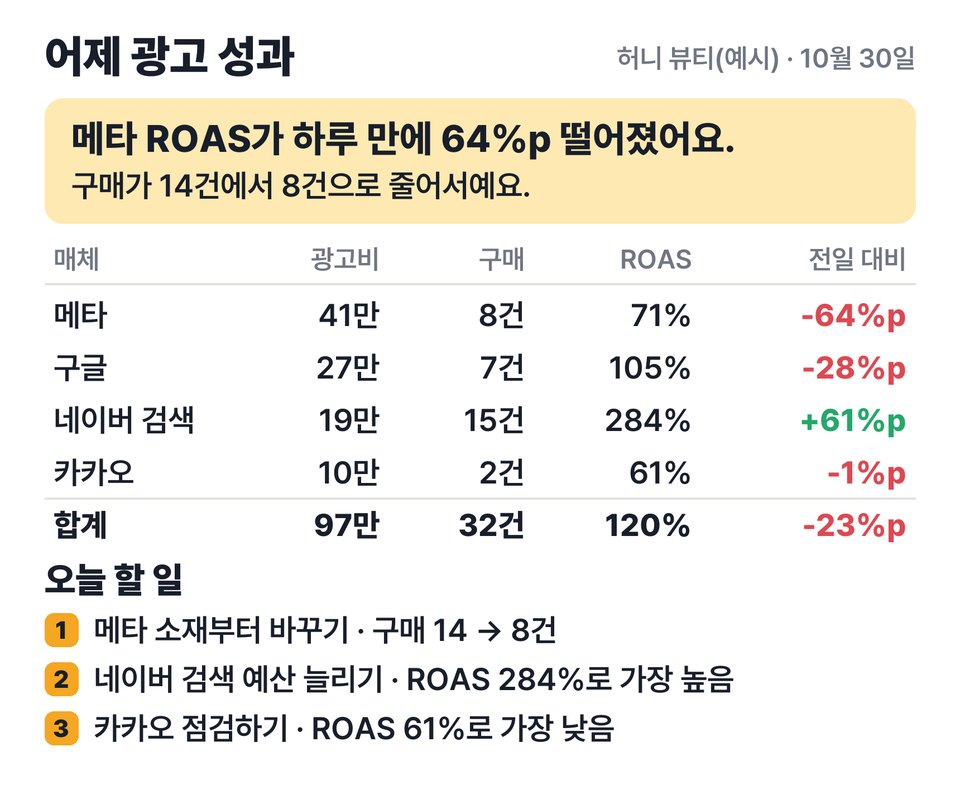

EP.27 · 아침 보고서
AI 말고,
AI 말고,
컴퓨터를 먼저 깨우세요
AI한테 아침 보고서를 예약해 둬도, 컴퓨터가 자고 있으면 그 회차는 건너뛰어요. 그래서 예약을 하나 더 걸어요 — 보고서가 8시면 컴퓨터는 7시 55분에 먼저 깨어나게. 아래 한 줄이면 돼요.
01왜 안 돌았나
Claude 데스크톱의 로컬 예약 작업은 내 컴퓨터에서 도는 거라 조건이 있어요(공식 문서 기준).
- 앱이 켜져 있고 컴퓨터가 깨어 있을 때만 돌아요.
- 잠든 사이 예약 시간이 지나면 그 회차는 건너뛰어요. 깨어날 때 지난 7일 안에 놓친 것 중 가장 최근 1번만 뒤늦게 돌아요 — 아침 8시 보고서가 밤 11시에 나올 수도 있어요.
- 앱의 '컴퓨터 깨어 있게' 설정은 자동 잠자기만 막아요. 노트북 덮개를 닫으면 그래도 잠들어요.
- 정기 예약은 서버 사정으로 몇 분 늦게 시작할 수 있어요.
02깨우기 한 줄
맥 — 터미널(응용 프로그램 › 유틸리티)에 붙여 넣고 Enter. 비밀번호를 물어요(입력해도 화면에 안 보여요).
평일(월~금) 7시 55분에 깨우기
sudo pmset repeat wake MTWRF 07:55:00
MTWRF = 월·화·수·목·금. 매일이면 MTWRFSU. 시각은 24시간제로 보고서 예약보다 5분쯤 앞에.
걸렸는지 확인
pmset -g sched
취소
sudo pmset repeat cancel
윈도우
작업 스케줄러 › 기본 작업 만들기 › 매일 7:55 › 속성의 조건 탭에서 "이 작업을 실행하기 위해 절전 모드 종료"를 켜요. 작업은 아무거나(예: 메모장 열기)여도 돼요 — 컴퓨터를 깨우는 게 목적이에요.
03보고서 예약 요청문
Claude 데스크톱 앱 사이드바 예약됨 › 새 작업(또는 아무 대화에 "매일 아침 8시에 …를 예약해 줘"). 대괄호만 내 걸로 바꿔요.
복사해서 예약 작업에 붙여 넣기
매일 아침 8시에, 어제 광고 성과 보고서를 한 장짜리 HTML로 만들어 줘. - 데이터: [광고 성과 CSV 파일 경로] (열: 날짜, 매체, 광고비, 노출, 클릭, 구매, 매출). 가장 최근 날짜가 '어제'야. - 숫자는 파일에서 계산해서 쓰고, 지어내지 마. - 맨 위에 결론 1~2문장(가장 큰 변화 하나와 이유 추정) - 매체별 표: 광고비 · 구매 · 매출 · ROAS · ROAS 전일 대비(%p) - 오늘 할 일 3개(숫자 근거 한 줄씩) - 저장: [보고서 폴더]/report_날짜.html 다른 파일은 만들거나 고치지 마.
실제 광고 계정을 바로 연결하기보다, 먼저 CSV를 내려받는 방식으로 시작하는 게 안전해요. 숫자는 꼭 파일에서 계산하게 시켜요.
이런 모양으로 나오게 시킨 거예요(가상 브랜드 '허니 뷰티' 예시 데이터).

04꼭 지킬 조건
- 시스템 종료 말고 잠자기. 깨우기 명령은 잠든 컴퓨터를 깨우는 거예요. 아예 꺼 두면 안 켜져요(FileVault가 켜진 맥은 새로 켤 때 로그인을 해야 해서 더 그래요).
- Claude 앱은 켜 둔 채로. 앱이 꺼져 있으면 예약도 안 돌아요.
- 노트북은 덮개를 열고 충전기를 꽂아 두세요. 덮개를 닫으면 잠들어요.
- 처음 한 번은 '지금 실행'. 예약 작업 화면에서 지금 실행을 누르고, 뜨는 권한 창마다 '항상 허용'을 눌러 두세요. 안 그러면 아침에 권한 창에서 멈춰 있어요.
- 예약 시각에 다른 예약이 돌고 있으면 건너뛸 수 있어요. 아침 예약은 하나만.
컴퓨터 없이 하고 싶다면
클라우드 예약 작업은 컴퓨터가 꺼져 있어도 돌지만, 내 컴퓨터 안의 파일은 바로 못 써요. 작업 폴더를 GitHub에 올려 두는 방법은 EP.24에 있어요.
05출처
- Claude Code 공식 문서 "Schedule recurring tasks in Claude Code Desktop"(code.claude.com/docs/en/desktop-scheduled-tasks) — 실행 조건 · 건너뛰기 · 권한. 2026-11-05 확인.
- Apple 지원 문서 "Mac이 시동되거나 종료되도록 예약하기"(support.apple.com/guide/mac-help/mchl40376151/mac) · 터미널
man pmset— 깨우기 명령. 2026-11-05 확인. - Microsoft Learn — 작업 스케줄러 WakeToRun("작업을 실행하기 위해 절전 모드 종료"). 2026-11-05 확인.
- 영상 속 보고서는 가상 브랜드 '허니 뷰티'의 예시 데이터예요. 썸네일 사진은 AI로 만들었어요.
실무에서 바로 쓰는 AI 활용법, 하나씩 올려요.
대행사에서 AI 교육하는 현직 마케터가 직접 써 보고 정리해요.
인스타에서 팔로우